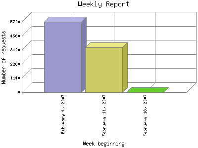

Analog 5.24
Analog 5.24 Report Magic for Analog 2.13
Report Magic for Analog 2.13The Weekly Report identifies the activity for each week within the report
time frame. Remember that one page hit can result in several server requests
as the images for each page are loaded.
Note: Depending on the
report time frame for this report the first and last week may not represent
a full seven day week, resulting in lower hits.

| Week beginning | Number of requests | Percentage of the requests | |
|---|---|---|---|
| 1. | February 18, 2007 | 1 | 0.1% |
| 2. | February 11, 2007 | 3,645 | 39.3% |
| 3. | February 4, 2007 | 5,692 | 60.96% |
Most active week beginning February 4, 2007 : 5,692 requests handled.
Weekly average: 3112 requests handled.
This report was generated on February 18, 2007 02:24.
Report time frame February 4, 2007 20:17 to February 18, 2007 03:34.
| Web statistics report produced by: | |
| Analog 5.24 | Report Magic for Analog 2.13 |